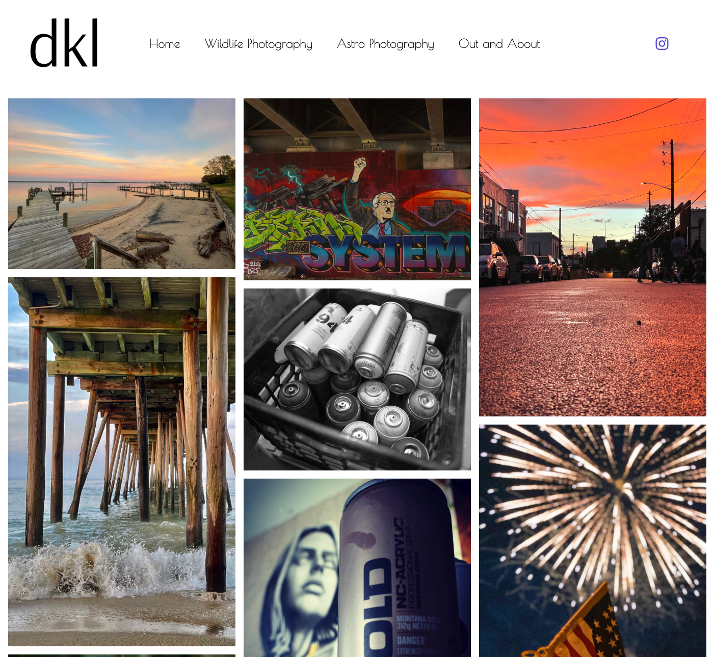
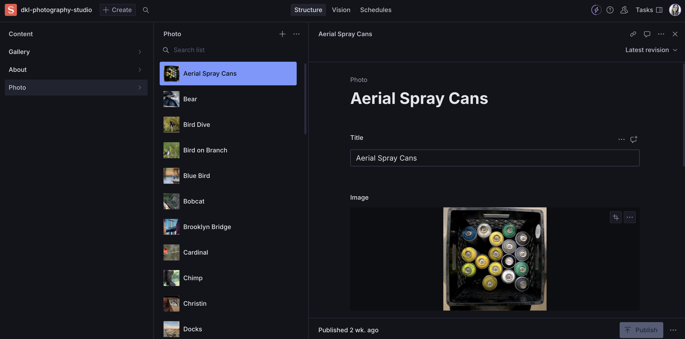

Case Study
DKL Photography is a web application that showcases a photographer's work in categorized galleries. The portfolio uses React as the front-end framework and Sanity.io as the content management system (CMS), allowing the client to manage his photos and to build an online presence.

Objectives
My client shared his photos through social media, however there was no organization system. He wanted a platform to easily share his photos, add or remove photos, and dynamically update content through Sanity.io without redeploying the app. Each photo is organized into a category, Wildlife, Astro, and Out and About. Visitors can navigate through the different galleries and view high-quality images.
Features
- Dynamic Content: Manage photos and their categories in Sanity.io
- Image Categorization: Photos and displayed based on categories.
- Responsive Design: Ensures a smooth user experience across all devices.
- Routing: Navigate to individual galleries with React Router.
Tech Stack
Frontend
- React
- React Router DOM
- CSS (custom styles)
- React Bootstrap
Backend / Content Management System
After weeks of researching and reaching out to freelance developers, I finally came across Sanity.io, a CMS that was perfect for what I wanted to accomplish with this site. Sanity.io is compatible with React and the user interface is simple enough that my client with little developer expertise can easily add content, delete content, and update content with ease.
I chose Netlify to deploy the app. This service is a great option being connected to Github, whenever there is an update to the site, it automatically deploys. This makes it great for my client to update and have his site current with the updates independently.
